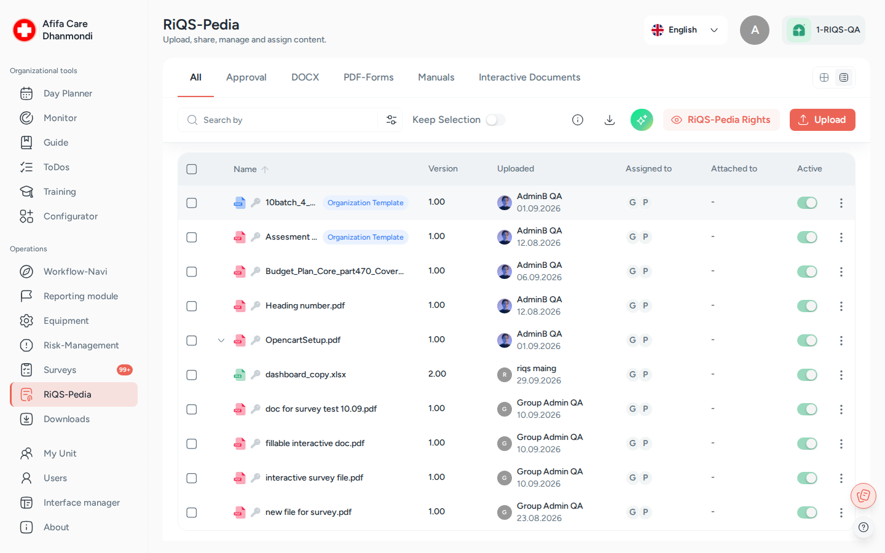

RiQS-Pedia (document library)¶
In one sentence: RiQS-Pedia is the organisation's controlled library for documents, forms and manuals: one place to store them, approve them, share them and reuse them in other modules. Menu: RiQS-Pedia · Status: Live

RiQS-Pedia: folders and files with version, uploader, attachments and active status. Screens show test data.
What it is¶
Every practice has documents that must be "the official version": hygiene rules, work instructions, checklists, device manuals, forms. Without a shared library, copies live in e-mails and personal folders, and nobody knows which one is valid.
RiQS-Pedia solves this. Think of it as a library with a librarian:
- Folders are the shelves, files are the books.
- Before a new book goes on the shelf, someone approves it (one, two or three people, depending on how important it is).
- The librarian decides who may read or change each book (sharing).
- Every few years the book is checked again (re-approval).
- Other modules (Process Guide, Day Planner, Equipment, To-Dos …) borrow the same book, so everyone always works with the latest approved version.
You will also hear the names DMS, Document Manager or Library. They all mean RiQS-Pedia.
Key terms¶
| Term | Meaning |
|---|---|
| Organisation level | Folders and files that belong to the whole organisation. Created by a RiQS Administrator, Administrator, Group Administrator or organisation-level RiQS-Pedia Officer. Shown with a key icon ("Created by admin"). |
| Unit level | Folders and files that belong to one unit. Created by the unit's own users. |
| Secret folder / file | A restricted folder or file of one unit, shown with a lock icon. Only people of that unit who were given access can see it. Organisation-level admins do not see it. |
| Approval principle | How many people must approve a file: Standard (1), 4 eyes (2), 6 eyes (3, with the uploader counted). Chosen per file when uploading. |
| Re-approval | A repeat approval after a set number of months, so documents are reviewed regularly. |
| Version | Each change creates a new version number. Organisation versions use whole numbers (1.00 → 2.00). Unit versions use small steps (1.00 → 1.01, or 0.01 for a first unit upload). |
| Draft | A saved, unfinished edit. Shown with a Draft badge. |
| Cover page | A page RIQS creates automatically for every file: file name, version, approval principle, uploader, approvers and signatures. |
| Template ("Standard") | An organisation document that is handed to units so they can create their own unit copy. Shown with a Standard badge; a unit copy shows Child Standard. |
| RiQS-Pedia Officer | A person who may approve (and manage) library content, at organisation level (also called Organisation Manager) or unit level (Unit Manager). Set in RiQS-Pedia Rights. |
| Viewer / Editor | The two access levels when sharing: read and download only, or also change. |
| Read confirmation | Proof that a person has opened and confirmed a shared document. |
| Attached to | The list of places in other modules where a file is used. |
See also the Glossary.
Who uses it¶
| Role | What they typically do here |
|---|---|
| RiQS Administrator | Sets RiQS-Pedia officers and approval rights at organisation and unit level. Has full rights on organisation and unit folders and files, holds approval rights at both levels, and is the only role that may delete released content in audit-safe mode. |
| Group Administrator / Administrator | Builds the organisation folder structure, uploads and approves organisation documents, hands out templates to units, sets organisation-level officers. |
| Power User | Runs the unit's library: unit folders, uploads, approvals, sharing, unit templates, unit-level officers. |
| Management | Uploads, shares and approves unit documents (Standard and 4 eyes), edits unit documents, moves files, manages secret folders. |
| Professional | Reads and downloads shared documents, fills forms, creates unit folders and uploads files. |
| RiQS-Pedia Officer (organisation or unit) | Approves documents according to their approval right; gets extra management rights at their level. |
How it works¶
1. Upload. A user clicks Upload and picks Create New Folder, Upload File, Upload Pdf-forms or Equipment manual. During upload they choose the version, the folder, the approval principle, the re-approval cycle and key words.
2. Approval. The new file is Pending and appears in the Approval tab. The right approvers approve it (with an electronic signature if required). After the last approval it is Approved, gets its cover page and becomes visible to everyone it is shared with.
3. Share and use. The file is shared with units, user groups or single people as Viewer or Editor. People find it in the library, read it, download it, fill it (forms) or see it attached in other modules.
4. Change. Someone with edit rights edits the document online or uploads a new version. The new version goes through approval again. Once approved, it replaces the old version everywhere.
5. Re-approval. When the re-approval date comes, the file shows Re-approval started and must be approved again.
6. End of life. A file can be set Inactive (kept, but not offered for new use) or Removed (deleted).
Approval status of a file:
Pending → Partially approved (4 or 6 eyes only) → Approved → Re-approval started → Approved …
Separately, every file is Active or Inactive. There is no "Rejected" status. See Open questions.
The screen¶
- Tabs: All (folders and files), Approval (files waiting for you), DOCX (Word files), PDF-Forms, Manuals (equipment manuals), Interactive Documents. The tabs are views on the same library, not separate libraries.
- Toolbar: search with Filter, Folder search (only inside a folder: include sub-folders or not), Keep Selection (keep ticked items while you move between folders), View details (side panel), Library report (Excel list), the RiQS AI button (ask questions about selected documents), RiQS-Pedia Rights and Upload.
- View control: people who are both a normal user and an officer see a switch: Personal or Officer (ORG) / Officer (UNIT). Officer rights only apply while the switch is on the officer side.
- Row menu (⋯): shows only the actions you are allowed to do right now (see below).
How to …¶
How to create a folder¶
Who can do this: RiQS Administrator, Group Administrator, Administrator and organisation officers (organisation folders); RiQS Administrator, Power User, Management, Professional (unit folders); Power User and Management only (secret folders) 1. Open RiQS-Pedia, go to the place where the folder should be. 2. Click Upload → Create New Folder. 3. Enter a Folder Name and pick a Folder Color. 4. Optional, at the top level of a unit only: switch on Secret Folder. 5. Click Create.
Result: The folder appears in the list. If you try to create a folder at a level you do not belong to, you see "You're not allowed to create folders at the ORG/UNIT level".
How to upload a file¶
Who can do this: every role (into secret folders: RiQS Administrator, Power User and Management only) 1. Open the folder where the file belongs (it is pre-selected later). 2. Click Upload → Upload File (or Upload Pdf-forms / Equipment manual, PDF only). 3. Version: choose New or Replace Version (pick the document you replace). You can adjust the suggested version number. 4. File: drag and drop or browse. Check the folder. Maximum size is 2 GB. 5. For PDF forms only, Electronic Signature: decide if filling needs a signature, choose the Signature type (simple, advanced or qualified) and, if wanted, 2 Factor authentication required. 6. Approval Principle: Standard, 4 eyes or 6 eyes. 7. Re-approval: choose the Interval Duration (1–12, 24, 36, 48 or 60 months; default 36) and the Duration of the re-approval process (default 6 months), or switch on Re-Approval not required. 8. Key Words: add words that help people find the file. 9. Click Save.
Result: "File sent for approval." The file is Pending and is listed in the Approval tab until it is approved.
How to approve a file¶
Who can do this: see "Rules to know → Who may approve" 1. Open the Approval tab (or the link in Workflow-Navi). 2. Open the file and check it. Changes since the last version are shown. 3. Click Approve. 4. If a signature is required, enter the 5-digit code (2-factor) and/or sign in the signing window.
Result: "File approved". The cover page is updated. With 4 or 6 eyes, the file stays Partially approved until the last approval.
How to share a file or folder¶
Who can do this: files: RiQS Administrator, Group Administrator, Administrator, Power User, Management; organisation folders: Group Administrator, Administrator; unit and secret folders: Power User (secret folders also Management); RiQS-Pedia Officers at their level 1. In the row menu choose Share (or Share Folder). 2. In Basic assignment, pick the Organization, then Units, User Group or single Users. Use Advanced Assignment for detailed per-person settings with filters. 3. Set the Permission type: Viewer or Editor. 4. Optional: tick Notify user and choose whether to notify only added or removed users or all assigned users. 5. Click Share.
Result: "File Shared". The people can now find the file in the list and in search.
How to edit a document or create a new version¶
Who can do this: people with edit rights on that document (see table) 1. In the row menu choose Edit Document (or Edit Excel / Edit PPT). If a draft already exists, the menu says Continue Editing. 2. Edit in the browser. Your work is saved as a draft. 3. Save the new version. A unit user who edits an organisation document chooses a unit folder for their unit version.
Result: A new version is created and sent for approval. Older versions stay in Version History.
How to use a template¶
Who can do this: Administrator / Group Administrator (hand out); Power User and unit officers (create unit version); assigned users (fill) 1. An organisation document is handed to units with Share as Template: pick the units and click Confirm. 2. In a unit, a Power User opens it and chooses Create Unit Standard to make the unit's own copy, or Make Unit Standard to turn a unit document into a unit template. 3. A normal user chooses Fill Template. Their filled copy is saved as a personal copy; the template itself does not change.
Result: The template shows a Standard badge; unit copies show Child Standard.
How to rename, move, recolour or tag¶
Who can do this: see table 1. In the row menu choose Rename, Move, Change Color (folders) or Key Words. Use Add file note for a short note (up to 100 characters). 2. For Move, pick the destination folder. RIQS warns you that the item will now be visible to whoever can see the new folder ("Change who has access"). 3. Confirm.
Result: The change is shown at once. A new name is also shown in Equipment, To-Dos and Configurator items that use the file.
How to download a file¶
Who can do this: anyone who can see the file 1. In the row menu choose Download.
Result: You get a ZIP with the original file and its cover page as PDF.
How to see who has read a file and where it is used¶
Who can do this: anyone who can see the file; revoking a read confirmation needs management rights (see table) 1. Open View details for the file. 2. Open the assignment list to see Assigned members and Read confirmations (pending / completed). Officers can Revoke a confirmation. 3. Click the Attached to info to see the modules where the file is used.
Result: You see who still has to read the file and where it is in use.
How to set approvers (RiQS-Pedia Rights)¶
Who can do this: RiQS Administrator, Group Administrator, Administrator (organisation level); Power User (unit level) 1. Click RiQS-Pedia Rights. 2. Choose Organization or a unit. 3. Add people to Standard approval right, 4-eyes approval right or 6-eyes approval right. 4. Click Save.
Result: These people become RiQS-Pedia Officers at that level.
How to deactivate or delete¶
Who can do this: see table 1. Use the Active switch, or Bulk activate / Bulk deactivate for several files. 2. To delete, choose Remove (or Delete for a selection) and confirm.
Result: "File removed". The file disappears from the library and from the modules that used it.
Rules to know¶
Organisation vs unit - Organisation-level users (Administrator, Group Administrator) work in organisation folders. Unit-level users work in unit folders. Neither can create folders on the other's level. - Power Users, Management and Professionals cannot rename, move, deactivate or delete organisation content (key icon), even if they can see it. - A unit user can turn an organisation Word document into a unit version; it is saved in a unit folder.
Who may approve - Organisation documents are approved by RiQS Administrators, Administrators, Group Administrators and organisation-level officers. Unit documents are approved by RiQS Administrators and the unit's Power Users, Management and unit-level officers. - Approval rights add up: a 6-eyes approver may also do 4-eyes and Standard approvals; a 4-eyes approver may also do Standard and the first of the two 6-eyes approvals. Only a 6-eyes approver may give the final 6-eyes approval. - Each person can be in only one of the three lists (the higher list already includes the lower rights). - Administrators always hold 6-eyes rights at organisation level; this cannot be removed. Power Users are approvers of their unit by default for Standard, 4 eyes and 6 eyes; Management by default for Standard and 4 eyes. They can be moved to a lower list. - 4 eyes: the uploader cannot approve their own file. 6 eyes: the uploader and anyone who already approved in this cycle cannot approve again. - Professionals cannot approve unless they are made an officer.
While a file is pending - Only View File, Download, Approve, Key Words, Edit Document, Version History and Remove are offered. Share, Move and Rename come back after approval. - Approvers and the uploader may edit a pending version. This does not create a new version number.
Sharing - When a folder or file is moved, it takes over the access rights of the new folder. Moving into a secret folder makes it secret; moving out of one removes the secret mark. - New sub-folders take over the access of their parent folder. A new file in a shared folder becomes visible to that audience once it is approved. - Professionals can only be given Viewer access to normal documents. Editor is possible for forms and unit template copies. - Templates and their unit copies are handed out with Share as Template, not with normal Share.
Versions - A new approved version replaces the old one in all modules and keeps the same assignments. - Version history shows the differences between versions.
Delete and deactivate - A file that is still used by an open task (for example a To-Do, equipment maintenance or incident report) cannot be set inactive. - Deleting a folder deletes everything inside it. There is no recycle bin. - Deleting removes the file's links in other modules. - In audit-safe mode only the RiQS Administrator may delete released files and folders with content. Files not yet released may still be deleted by Group Administrators, Administrators and organisation officers (organisation files) and by Power Users and unit officers (unit files). Empty unit folders may still be deleted by Group Administrators, Administrators, Power Users and officers.
Notifications - Workflow-Navi lists documents assigned to you, documents edited by others, files to approve, files to re-approve and forms to sign.
Who can do what¶
✅ allowed · ❌ not allowed · text = condition · "not specified" = the rights sheet sets no rule. "Officer" = RiQS-Pedia Officer of that level.
| Action | RiQS Administrator | Group Administrator | Administrator | Power User | Management | Professional |
|---|---|---|---|---|---|---|
| View and download files shared with you | ✅ | ✅ | ✅ | ✅ | ✅ | ✅ |
| View organisation folders and organisation documents | ✅ | ✅ | ✅ | ✅ if assigned | ✅ if assigned | ✅ if assigned |
| Upload files | ✅ | ✅ | ✅ | ✅ | ✅ | ✅ |
| Choose the approval principle when uploading | ✅ | ✅ | ✅ | ✅ | ✅ | ✅ |
| Add key words | ✅ | ✅ | ✅ | ✅ | ✅ | ✅ |
| Edit / delete key words | ✅ | ✅ | ✅ | ✅ | ✅ | ❌ unless officer |
| Create, rename, move, recolour, deactivate organisation folders | ✅ | ✅ | ✅ | ❌ | ❌ | ❌ |
| Share (assign) organisation folders | ❌ | ✅ | ✅ | ❌ | ❌ | ❌ |
| Delete organisation folders (regular mode) | ✅ | ✅ | ✅ | ❌ | ❌ | ❌ |
| Create unit folders | ✅ | ❌ | ❌ | ✅ | ✅ | ✅ |
| Rename / recolour unit folders | ✅ | ✅ | ✅ | ✅ | ✅ | ✅ |
| Move unit folders and files | ✅ | ✅ | ✅ | ✅ | ✅ | ❌ unless officer |
| Share (assign) unit folders | ❌ | ❌ | ❌ | ✅ | ❌ unless officer | ❌ unless officer |
| Deactivate unit folders | ✅ | ❌ | ❌ | ✅ | ✅ | ❌ |
| Delete unit folders (regular mode) | ✅ | ✅ | ✅ | ✅ | ❌ | ❌ |
| Create, share and delete (regular mode) a secret folder | ❌ | ❌ | ❌ | ✅ | ✅ | ❌ |
| Upload files into a secret folder | ✅ | ❌ | ❌ | ✅ | ✅ | ❌ |
| Share (assign) files | ✅ | ✅ | ✅ | ✅ | ✅ | not specified |
| Approve organisation files | ✅ | ✅ | ✅ | ❌ | ❌ | ❌ unless org officer |
| Approve unit files | ✅ | ❌ | ❌ | ✅ | ✅ Standard and 4 eyes | ❌ unless unit officer |
| Edit organisation Word document → new organisation version | ❌ | ✅ | ✅ | ❌ | ❌ | ❌ |
| Edit organisation Word document → unit version | ❌ | ❌ | ❌ | ✅ if assigned | ❌ | ❌ |
| Edit unit Word document | ❌ | ❌ | ❌ | ✅ | ✅ | ❌ |
| View organisation templates | ✅ | ✅ | ✅ | ✅ if assigned | ✅ if assigned | ✅ if assigned |
| Edit organisation template / create new organisation version | ❌ | ✅ | ✅ | ❌ | ❌ | ❌ |
| Share as Template (hand out to units) | ❌ | ✅ | ✅ | ❌ | ❌ | ❌ |
| Create / edit unit templates | ❌ | ❌ | ❌ | ✅ | ❌ | ❌ |
| Open, fill and save forms | ✅ | ✅ | ✅ | ✅ | ✅ | ✅ |
| Deactivate organisation files | ✅ | ✅ | ✅ | ❌ | ❌ | ❌ |
| Deactivate unit files | ✅ | ❌ | ❌ | ✅ | ✅ | ❌ |
| Delete a file before it is released | ✅ | ✅ | ✅ | ✅ | ✅ | ❌ |
| Delete organisation files (regular mode) | ✅ | ✅ | ✅ | ❌ | ❌ | ❌ |
| Delete unit files (regular mode) | ✅ | ❌ | ❌ | ✅ | ❌ | ❌ |
| Delete in audit-safe mode: file not yet released | ✅ | ✅ org files | ✅ org files | ✅ unit files | ❌ | ❌ |
| Delete in audit-safe mode: empty unit folder | ✅ | ✅ | ✅ | ✅ | ❌ | ❌ |
| Delete in audit-safe mode: released files, folders with content | ✅ | ❌ | ❌ | ❌ | ❌ | ❌ |
| Manage RiQS-Pedia Rights (officers, approval rights) | ✅ organisation and unit | ✅ organisation | ✅ organisation | ✅ own unit | ❌ | ❌ |
| Export the Library report | ✅ | ✅ | ✅ | ✅ | ✅ | ✅ |
| Revoke a read confirmation | ✅ org files | ✅ org files; unit files of own primary unit | ✅ org files; unit files of own primary unit | ✅ unit files | ❌ unless officer | ❌ unless officer |
| Add a file note | ❌ | ✅ org files | ✅ org files | ✅ unit files | ❌ unless officer | ❌ unless officer |
A RiQS-Pedia Officer gets the rights of their approval list at their level (organisation or unit), on top of their main role, while their view control is set to Officer.
Connected modules¶
- Interactive documents: interactive documents and PDF forms are stored, approved and filled in RiQS-Pedia.
- Configurator: interactive documents are built there and uploaded to RiQS-Pedia; guides and trainings attach library files.
- Process Guide, Open Items / To-Dos, Shift Planner / Day Planner, Equipment, Incident Reports: attach library files and forms. The Attached to list shows these links. A renamed, new or deleted file is updated there automatically.
- Cockpit / Workflow-Navi: shows documents to read, approve, re-approve and sign.
- Interface Manager: bulk import of documents with their approval and signature settings.
- Organisation & units and Users: define who documents can be shared with.
Open questions¶
- Rejecting a file. There is no "Rejected" status. How should an approver say "no"? Today the only ways seem to be editing the pending version or removing it.
- RiQS Administrator rights. The rights sheet lets the RiQS Administrator upload, share, approve (organisation and unit), create unit folders and fill forms. The feature list says the RiQS Administrator may do none of these. This page follows the rights sheet; please confirm.
- Management and 6 eyes. The feature list says Management holds Standard, 4-eyes and 6-eyes rights by default. The rights sheet says Management cannot give the final 6-eyes approval. This page follows the rights sheet; please confirm.
- Management sharing files. The rights sheet lets Management share (assign) documents; the feature list says Management may not use Share. This page follows the rights sheet; please confirm.
- Organisation templates. The feature list says Management and Professionals cannot see organisation templates and Group Administrators cannot edit them. The rights sheet says "Yes (if assigned)" and "Yes". This page follows the rights sheet; please confirm.
- Rights sheet: general rows vs level breakdown. The general rows of the rights sheet say Professionals cannot create folders and Management cannot deactivate documents; the organisation/unit breakdown says Professionals may create unit folders and Management may deactivate unit documents. This page follows the more detailed breakdown. Which is right? The sheet also leaves Professionals blank for sharing files and editing key words.
- Sharing with one person. On the test system, ticking a single user leaves Share disabled; only a whole role works. Intended?
- Viewer vs Editor. What exactly may an Editor do that a Viewer cannot (edit, new version, move, delete)? And after a share is removed, should the file disappear at once and what happens to open read confirmations?
- Form type. The earlier app let uploaders mark a PDF form as Normal, Confidential or General (General forms cannot be shared). The current app has no such choice. Is this planned, and what does Confidential mean?
- Re-approval timing. Does "Duration of the re-approval process" mean how many months before the due date re-approval starts? Who is reminded?
- Deleting used files. A file used by an open task cannot be deactivated, but can it still be deleted? And can deleted files be restored by support?
Last reviewed: 2026-10-26